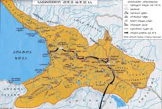

ძელი პერიოდი
აქართველოს ისტორია იწყება ძველ ეპოქაში, როდესაც ჯერ კიდევ შეიქმნა ცნობილი კოლხეთი და იბერია. კოლხეთი, რომელიც მდებარეობდა თანამედროვე დასავლეთ საქართველოს ტერიტორიაზე, ცნობილი იყო თავისი ოქროს წყაროებით და მისმა მეფე მედიასმა არგონავტების ლეგენდაში ითამაშა მნიშვნელოვანი როლი.
